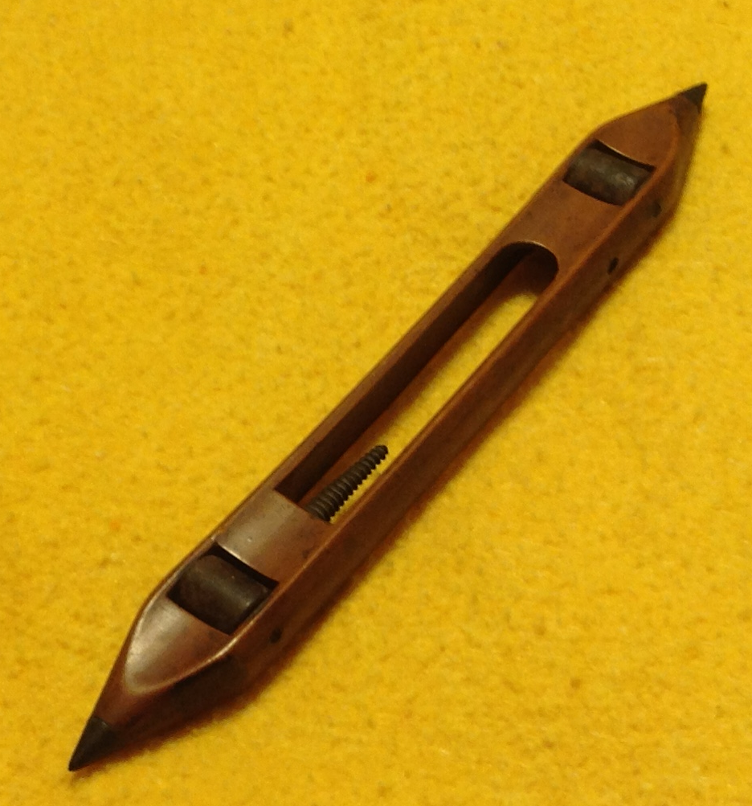

Grandma’s Shuttle

Shuttle: The vehicle used to traverse the weft from selvedge to selvedge – S. C. Lutton
Today, March 14, 2016, my first cousin, Cornelia (Glendenning) Traetta presented me with a shuttle that belonged to our Great Grandmother, Margaret (Harley) Glendinning; this is my understanding of the story.
My Great Great Grandfather, William Harley was born in Worcester, England but moved to Courtmacsherry, County Cork, Ireland, before the turn of the century where William was believed to have been a school master. All five children (2 boys and 3 girls) came to New Brunswick in the 1820’s; one daughter, Margaret (1803-1895), married John Glendinning in 1833 settling first at Salmon Beach and later in Canobie. (The change from Glendinning to Glendenning came, I believe, with the granting of lots to John and Walter Glendenning about 1856). Pioneer Settlers, a history of Canobie, tells us that early settlers had sheep, spun their own wool and wove cloth; it also tells us that John Glendinning had one of the first “weaving machines” (looms) in Canobie and the Glendinnings taught many in the community to weave.
Weaving involves the use of a loom to interlace threads at right angles to each other. The threads running the length of the cloth form the warp; the threads running across the warp are known as the weft. The weft thread is carried back and forth across the warp by a shuttle holding a bobbin or on a small rod called a pirn. Grandma’s shuttle measures 12 x 11/8 x7/8, in excellent condition and is made of a dark wood believed to be walnut. It has a tapered, “threaded” pirn, and a hole through one side for the thread to unravel.
The shuttle was brought to Canada from Ireland by my Great Grandmother, Margaret (Harley) Glendenning in the 1820’s.; it may have been given as a gift or may even have been given to the youngest daughter on leaving the family nest as a family heirloom. The shuttle passed to Margaret’s granddaughter, Venetia, who lived in Falmouth, Foreside, Maine for a number of years before moving to Bowling Green, Florida; Venetia gave the shuttle to her niece, Cornelia (Glendenning) Traetta of Ormond Beach, Florida, who gave it to me. The shuttle is now in PEI but will be donated to the New Brunswick Museum.